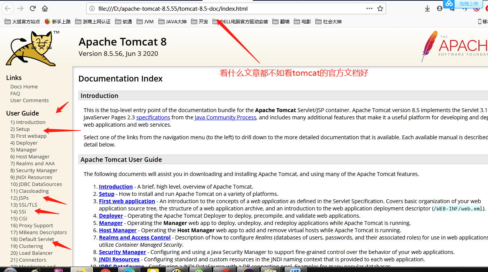
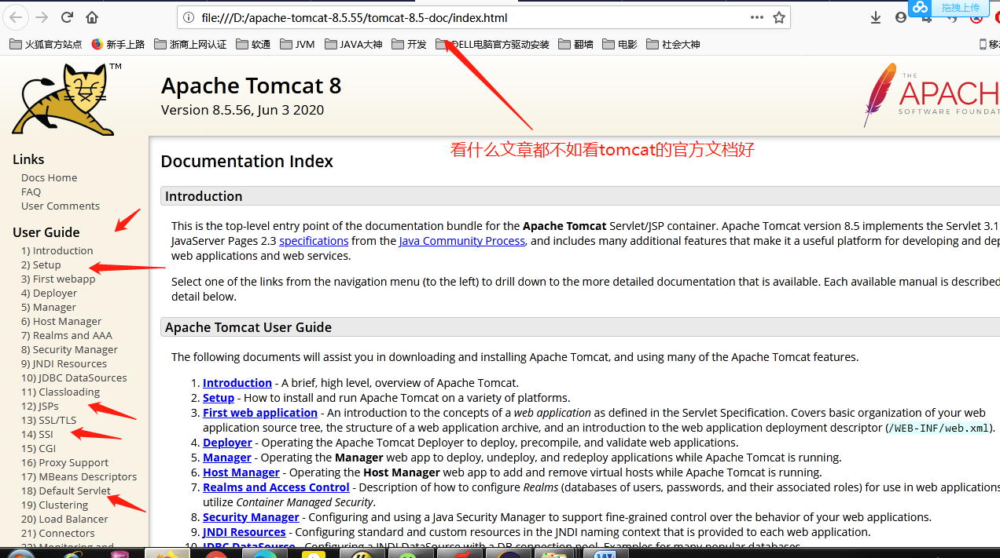
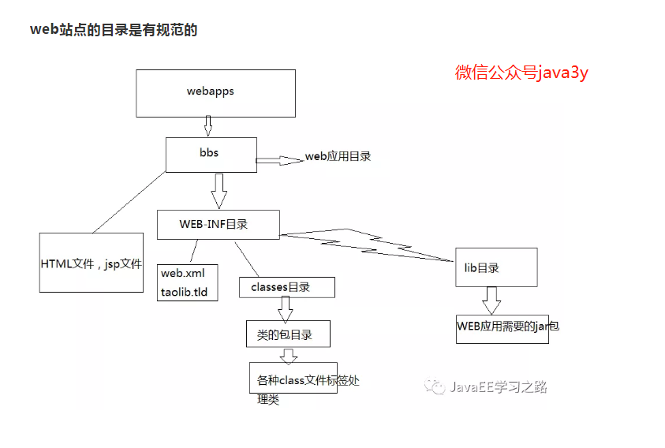
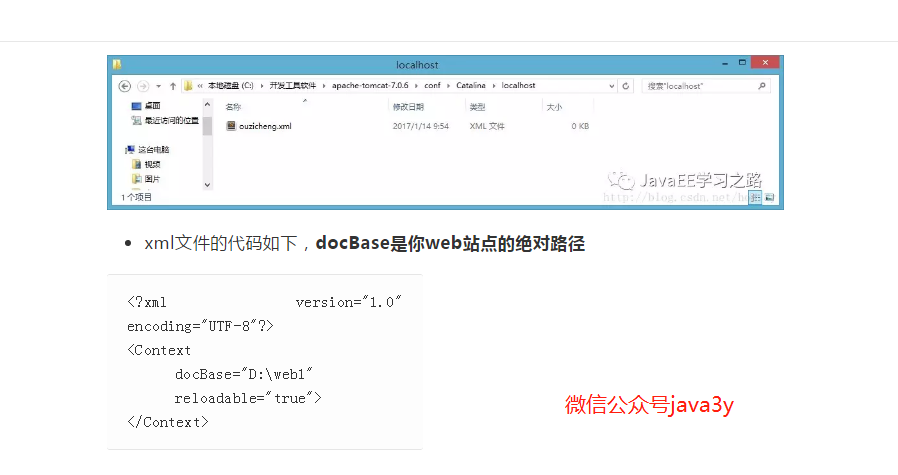
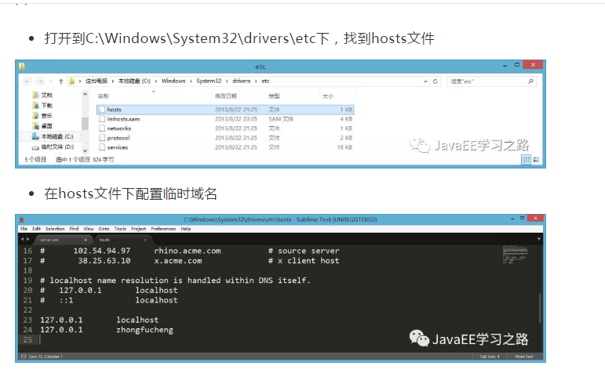
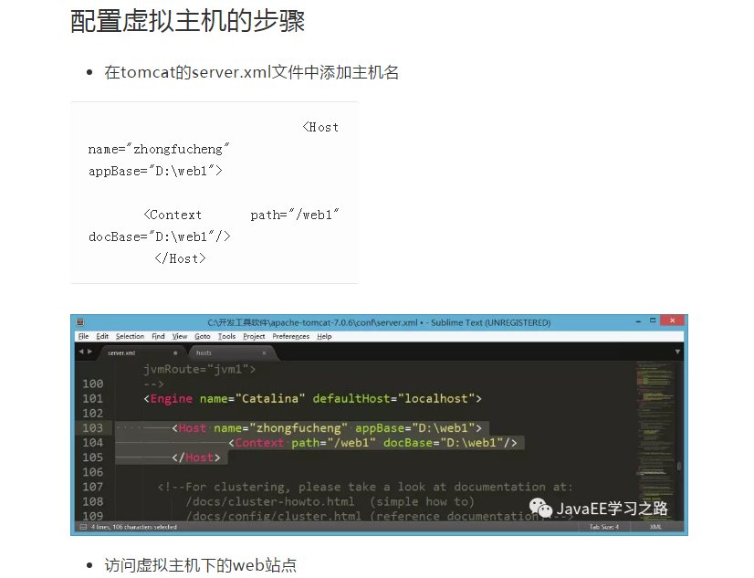
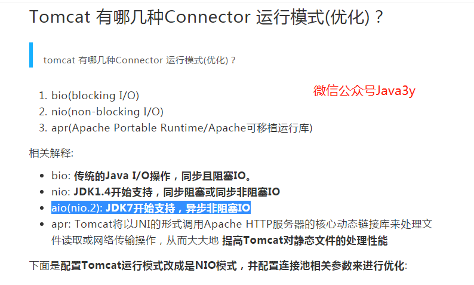
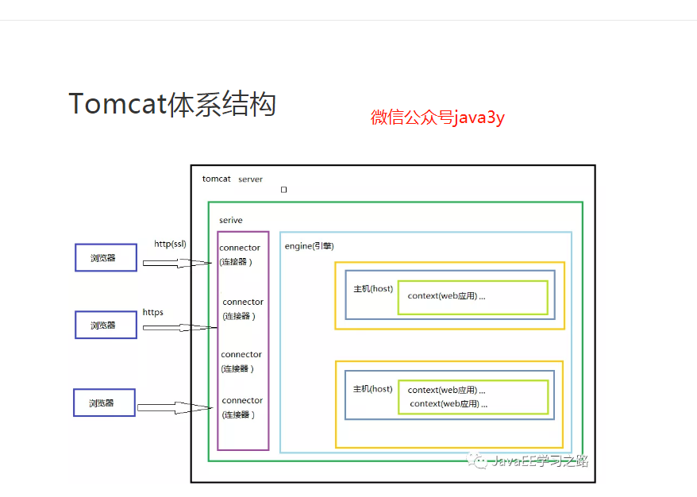
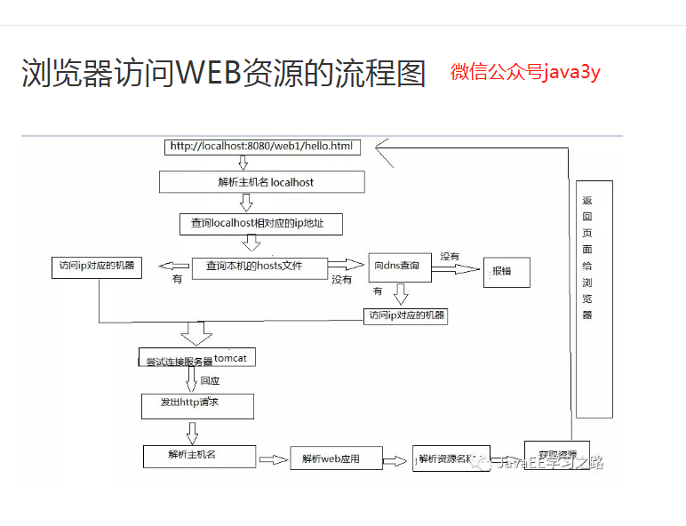

首先说明,学习技术看什么都不如看官方文档好。推荐下载tomcat的官方文档,有问题就去tomcat官方文档上面找.jsp的标签库为什么非得放在WEB-INF目录下面应该就可以从tomcat 官方文档上面找到。
首先说明,学习技术看什么都不如看官方文档好。推荐下载tomcat的官方文档,有问题就去tomcat官方文档上面找.jsp的标签库为什么非得放在WEB-INF目录下面应该就可以从tomcat 官方文档上面找到。
1、首先要知道JSP是由tocmat编译的,编译之后生成的java文件和class文件会存放到tomcat的work目录下面
2、tomcat的webapps下面的每个应用的目录是有规范的

3、tomcat的webapps下面的每个应用目录都有一个web.xml,这个web.xml如果你不知道该怎么写,你可以在tomcat的webapps下面的官方示例应用里面复制一份过来
4、正常情况下,你所有的项目都在tocmat的webapps下面放着,但是如果你的项目太多,会导致webapps这个目录所在的空间不够了,这时你只需要在tomcat的conf/server.xml
文件里面添加如下代码:
Context path="/web1" docBase="D:\web1"就可以了。第二种方式:进入到conf\Catalina\localhost文件下，创建一个xml文件，该文件的名字就是站点的名字。

5、配置临时域名：打开到C:\Windows\System32\drivers\etc下，找到hosts文件,按图配置

6、设置虚拟主机：什么是虚拟主机？ 多个不同域名的网站共存于一个Tomcat中。为什么需要用到虚拟主机？例子：我现在开发了4个网站，有4个域名。如果我不配置虚拟主机，一个Tomcat服务器运行一个网站，我就需要4台电脑才能把4个网站运行起来。

7、tomcat的端口怎么改？在tomcat的conf目录下的server.xml文件里面修改Connector 节点的的port属性就行
8、Tomcat 有哪几种Connector 运行模式(优化)？
bio(blocking I/O)传统的Java I/O操作，同步且阻塞IO。
nio(non-blocking I/O)JDK1.4开始支持，同步阻塞或同步非阻塞IO
apr(Apache Portable Runtime/Apache可移植运行库) Tomcat将以JNI的形式调用Apache HTTP服务器的核心动态链接库来处理文件读取或网络传输操作，从而大大地 提高Tomcat对静态文件的处理性能

TOMCAT体系机构

浏览器访问WEB资源的流程图

本篇内容来自微信公众号Java3y,了解详情请前往微信公众号关注。https://mp.weixin.qq.com/s/Q_zZJEnINusT5OJVP4x58w https://mp.weixin.qq.com/s/J-MQXIQU0i93tSehPdVVww